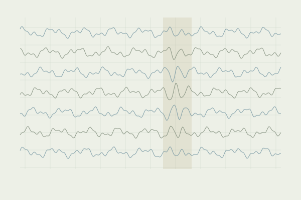

Making EEG analysis inspectable
Ongoing group research · preprocessing

How can an EEG preprocessing workflow make each quality-control decision clear and reviewable?
Preprocessing choices determine which signals enter later analyses. Making the evidence and the reviewer’s decisions visible helps collaborators understand how an analysis input was produced, and revisit a decision when needed.
The MATLAB / EEGLAB workflow covers signal preparation, ICA, and channel and epoch inspection. Automatic methods only flag candidates for review; a human reviewer makes and records the final decision.
- My role
- Implementing preprocessing steps and quality-control reports; inspecting channels, independent components and epochs; maintaining documentation that links decisions to the workflow.
- Methods
- EEG · EEGLAB · ICA · manual quality control
- Setting
- Music and Language Development Research Group, ELTE
This page describes preprocessing work only; recordings and downstream findings are not reported.